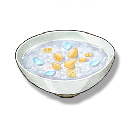

Caltrop Soup
Supplies

Increases the attack of all Resonators in the team by 120 points and the Crit. Rate by 6% for 30 minutes, only effective for the player's Character in multiplayer games.
Also known as "Winter Cloud Soup", a high-end porridge made by slow-cooking Caltrop with poultry broth. The key to cooking is the control of the heat and the ratio of the ingredients. The slow cooking with a gentle heat restores the original sweetness of the Caltrop. Paired with Honeysuckle, even a lonely night will feel happy.